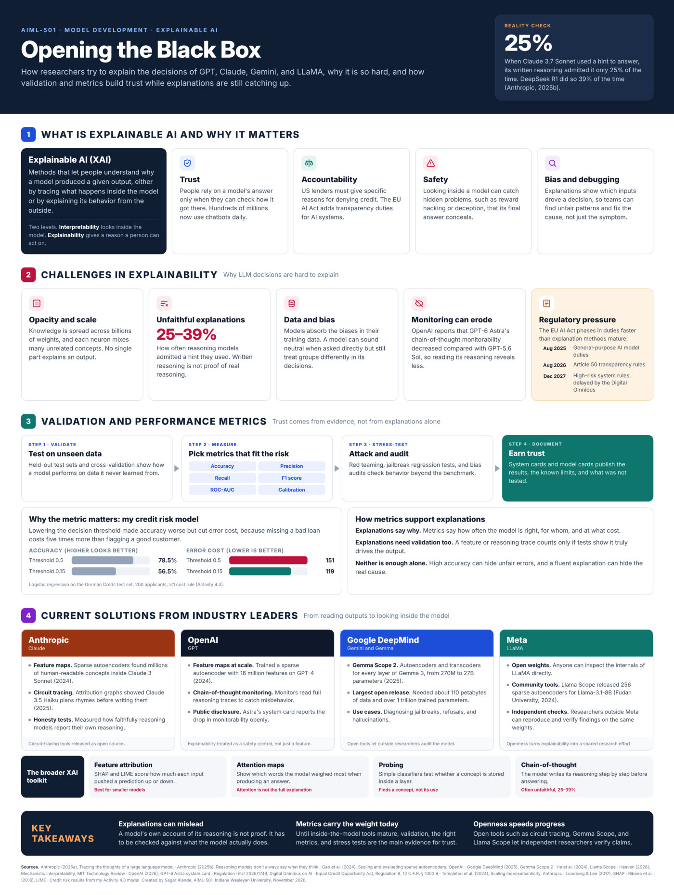

Opening the Black Box
How researchers try to explain the decisions of GPT, Claude, Gemini, and LLaMA, why it is so hard, and how validation and performance metrics build trust while explanations are still catching up.
Title
Opening the Black Box · Explainable AI for GPT, Claude, Gemini, and LLaMA, and How Validation Builds Trust
Objective
Research why the decisions of large language models are hard to explain, summarize what leading AI organizations are doing about it, and show how validation techniques and performance metrics keep models reliable and accountable, all in one professional infographic.
What is it?
A one-page infographic in four numbered sections, one for each part of the brief, with a short explanatory text. It ties the research to a real example from my own credit risk model, so the point about metrics is shown, not just stated.
The Infographic
The poster opens as its own page so you can read it at full size, or download it as a PDF.

Walk Through the Four Sections
Each section answers one part of the brief. Select a section to see what it covers.
What Industry Leaders Are Doing
The field is moving from reading a model's outputs to looking inside the model itself.
Anthropic · Claude
Sparse autoencoders found millions of human-readable features inside Claude 3 Sonnet, circuit tracing showed Claude 3.5 Haiku planning rhymes before writing them, and honesty tests measured how faithfully reasoning models report their own reasoning.
OpenAI · GPT
Trained a sparse autoencoder with 16 million features on GPT-4, monitors full chain-of-thought traces to catch misbehavior, and reports changes in how readable its models' reasoning is in their system cards.
Google DeepMind · Gemini and Gemma
Gemma Scope releases open autoencoders across the layers of its open Gemma models, so outside researchers can diagnose jailbreaks, refusals, and hallucinations.
Meta · LLaMA
Open weights let anyone inspect the model directly. Community tools such as Llama Scope add sparse autoencoders, and independent researchers can reproduce findings on the same weights.
The broader toolkit, and the limit of each tool
Why the Metric Matters: My Credit Risk Model
From my Activity 4.3 logistic regression on the German Credit test set (200 applicants), where missing a bad loan costs five times more than flagging a good customer.
78.5% accuracy · error cost 151
Looks better on accuracy, but it approves 27 applicants who later default.
56.5% accuracy · error cost 119
Accuracy drops, but only 8 bad loans slip through, so the total cost of errors falls by about a fifth.
The lesson the infographic draws from this: the right metric depends on what an error costs. High accuracy can hide expensive mistakes, just as a fluent explanation can hide the real cause.
About the Infographic
The infographic follows the four parts of the brief in order. It defines explainable AI at two levels, interpretability inside the model and explanations a person can act on, and shows why transparency matters for trust, accountability, safety, and finding bias. It then sets out why large models such as GPT, Claude, Gemini, and LLaMA are hard to explain: knowledge spread across billions of weights, written reasoning that admitted a hint it used only 25% to 39% of the time, bias absorbed from training data, monitoring that can erode, and regulation that moves faster than explanation methods. The last two sections show how validation and metrics earn trust today and how Anthropic, OpenAI, Google DeepMind, and Meta are opening their models from the inside.
The main message is that explanations and evidence work together. An explanation says why; validation, the right performance metrics, and stress tests show how often the model is right, for whom, and at what cost, and a model's account of its own reasoning has to be checked against what it actually does. The design follows that logic: four numbered, color-coded sections, a large headline number where a statistic carries the point, the limit of each technique printed next to it, and a real result from my own credit risk model, so a reader sees a metric change the decision rather than reading about it.
Process
The work followed five steps. Select a step to see what happened in it.
Key Considerations
The challenges the course anticipated, and how the infographic answers each one.
Design Choices
Each choice has one job, which is to make a hard topic easy to follow and hard to misread.
Follow the brief
Four numbered sections in the same order as the assignment, so a reader can check each requirement at a glance.
One color per section
Blue for the definition, red for challenges, teal for validation, and purple for solutions, with an icon on every card.
Big numbers carry the point
The 25% faithfulness result leads the page and the 25 to 39% range anchors the challenges, so the key evidence is seen first.
Every tool shows its limit
Each technique in the toolkit carries a short red note on what it cannot do, so no method looks like a complete answer.
Value
This artifact shows that I can turn a fast-moving research area into a clear picture for a non-specialist reader, and connect it to evidence from my own work.
The same habits matter in financial services, where models that affect customers must be explainable, validated, and documented before anyone relies on them.
Reflection · What I Learned
Before this activity, I assumed a model that explains its reasoning is a model we can trust. Now I see an explanation as one more output that has to be tested, and validation and the right metrics as the evidence that carries the weight today.
- A model's written reasoning is not proof of its real reasoning. Reasoning models admitted a hint they used only 25% to 39% of the time.
- Interpretability (looking inside) and explainability (a reason a person can act on) are different goals, and both are needed.
- Inside-the-model tools such as sparse autoencoders and circuit tracing are promising but still early, so validation and stress tests carry most of the trust today.
- Open models and open tools let outside researchers verify claims, which turns explainability into a shared effort.
- Research synthesis. Turning research papers, system cards, and regulation into four short sections.
- Evidence first. Pairing each claim with a source and a number, and stating the limit of each technique.
- Applied metrics. Using my own model to show how the choice of metric and threshold changes a decision.
- Information design. Numbered sections, one color per section, and one headline number per card.
- Credit risk model (Activity 4.3). The threshold trade-off on the infographic comes straight from that model's test results.
- Patient Readmission Support. Our team found that an 80% recall can hide real problems, the same lesson about metrics in a healthcare setting.
- How LLMs are trained. Alignment and evaluation, two steps in that pipeline, are where explainability and validation happen.
“A model's account of its own reasoning is not proof. Until inside-the-model tools mature, validation, the right metrics, and stress tests are the main evidence for trust.”
References
Anthropic. (2025a). Tracing the thoughts of a large language model. https://www.anthropic.com/research/tracing-thoughts-language-model
Anthropic. (2025b). Reasoning models don't always say what they think. https://www.anthropic.com/research/reasoning-models-dont-say-think
Equal Credit Opportunity Act (Regulation B), 12 C.F.R. § 1002.9.
Gao, L., la Tour, T. D., Tillman, H., Goh, G., Troll, R., Radford, A., Sutskever, I., Leike, J., & Wu, J. (2024). Scaling and evaluating sparse autoencoders (arXiv:2406.04093). arXiv. https://doi.org/10.48550/arXiv.2406.04093
Google DeepMind. (2025). Gemma Scope 2.
He, Z., Shu, W., Ge, X., Chen, L., Wang, J., Zhou, Y., Liu, F., Guo, Q., Huang, X., Wu, Z., Jiang, Y.-G., & Qiu, X. (2024). Llama Scope: Extracting millions of features from Llama-3.1-8B with sparse autoencoders (arXiv:2410.20526). arXiv. https://doi.org/10.48550/arXiv.2410.20526
Heaven, W. D. (2026). Mechanistic interpretability. MIT Technology Review.
Lundberg, S. M., & Lee, S.-I. (2017). A unified approach to interpreting model predictions. Advances in Neural Information Processing Systems, 30.
OpenAI. (2026). GPT-6 Astra system card.
Regulation (EU) 2024/1689 of the European Parliament and of the Council (Artificial Intelligence Act), and the Digital Omnibus on AI.
Ribeiro, M. T., Singh, S., & Guestrin, C. (2016). “Why should I trust you?” Explaining the predictions of any classifier. Proceedings of the 22nd ACM SIGKDD International Conference on Knowledge Discovery and Data Mining, 1135–1144. https://doi.org/10.1145/2939672.2939778
Templeton, A., Conerly, T., Marcus, J., et al. (2024). Scaling monosemanticity: Extracting interpretable features from Claude 3 Sonnet. Anthropic. https://transformer-circuits.pub/2024/scaling-monosemanticity/